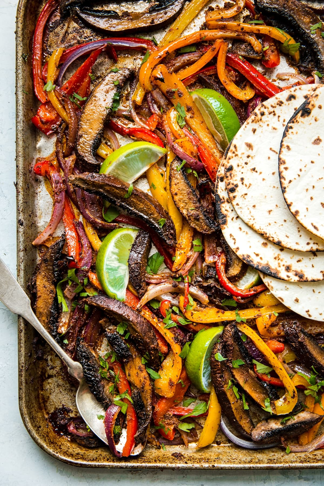

Vegetarian Fajitas

Description
A fast and healthy way to knock out some daily vegetable requirements! This recipe gets bonus points for being tasty as well as nutritious. You can change the veggies up to your heart's content but playing with variations on spices, guacamole, salsa, etc., makes this a repeatable dish that still holds the promise of variety. I'm not a fan of mushrooms but this may have won me over...?(!)
Ingredients for vegetarian fajitas
- Olive oil
- Taco seasoning
- Portobello mushrooms
- Limes
- Red onions
- Bell peppers
- Cilantro
- Jalapeño
- Avocados
- Garlic
Steps
- Slice the vegetables and mushrooms into long thing slices (think french fries), then marinate them in the taco seasoning, enough olive oil to generously coat everything, and a squeeze of lime juice. Marinate them for at least one hour.
- Load up a sheet pan with your marinated vegetables and mushrooms, then roast them for about 20 minutes in a 450°F oven.
- Smash your peeled avocado flesh and some chopped jalapeño into a bowl. Add cilantro if you're feeling edgy or are otherwise a monster.
- Warm your tortillas in a skillet just before serving.